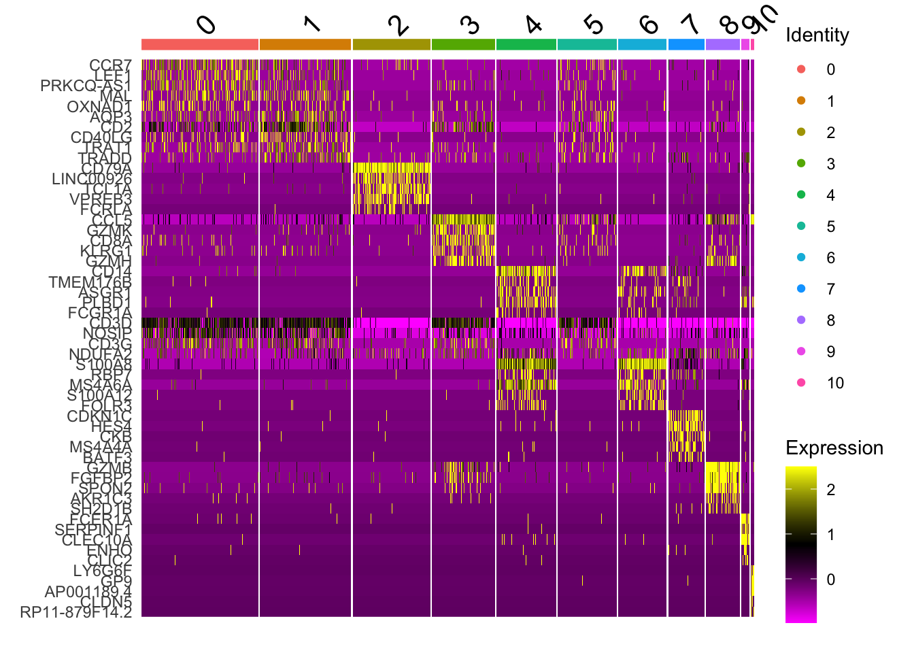
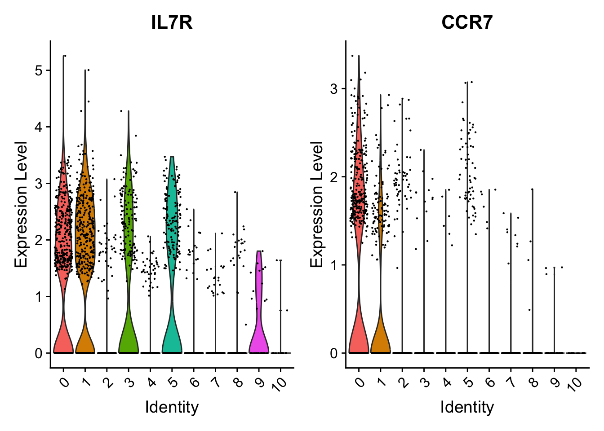
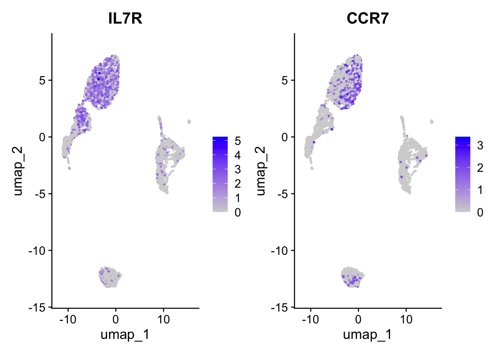
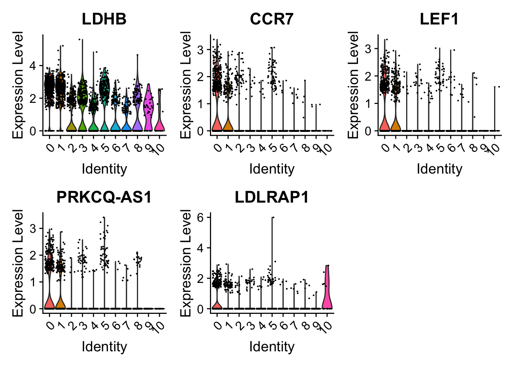
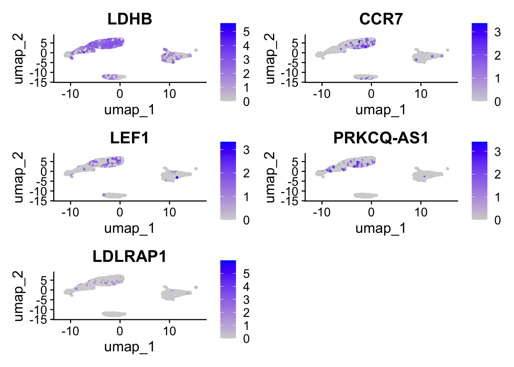
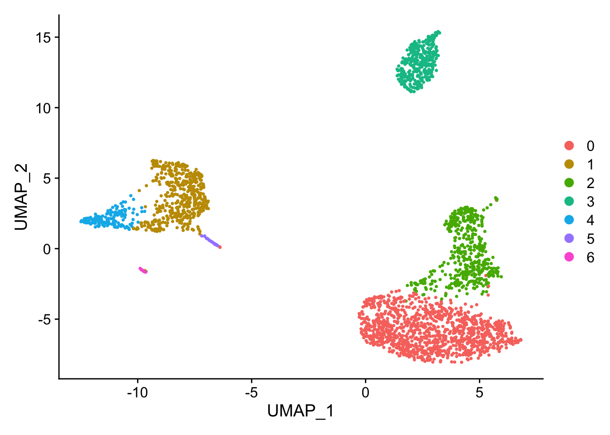
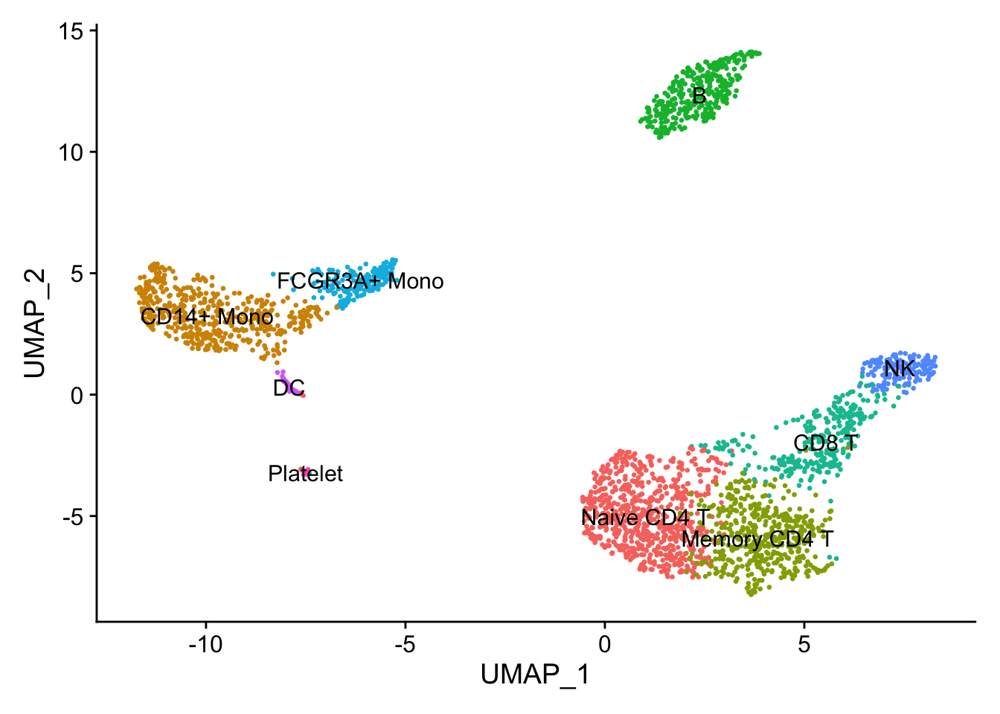
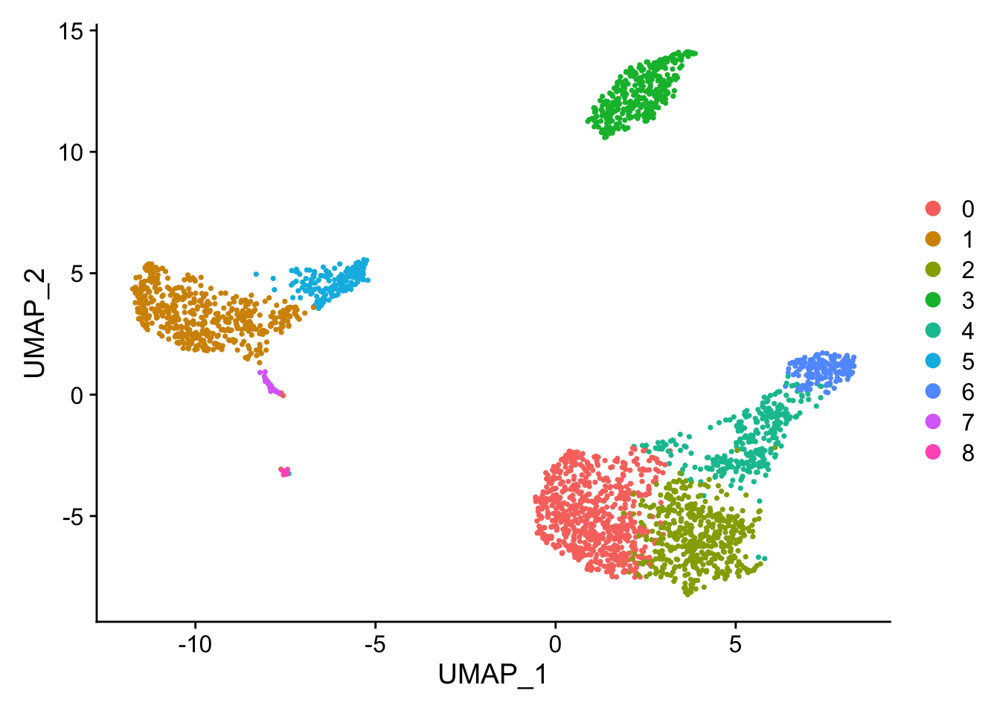

A stripped down version of Example #1, modified to allow key parameters to be easily changed in order to look at the stability of the final results.
Tests and results:
Like Example #2, nFeature_RNA is cut at 4000 (not cut actually because it includes all data point from the created object). Now we modulate FindClusters resolution.
Changing FindClusters resolution to 0.2 (from 0.5) causes a merge of CD14+ Mono Naive and Memory cells. Likewise a merge of CD8 T and NK cells. Other cells populations remain distinct. Overall, a change from 9 to 7 communities.
Changing FindClusters resolution to 1.0 (from 0.5) causes a split in the CD4 T/CD8 T region and a split in the CD14+ Mono / FCGR3A+ Mono region to give 11 communities (from the original 9). The high nFeature_RNA extension of the NK cells remains.
Environment Load and Check
library(patchwork)library(dplyr)
Attaching package: 'dplyr'
The following objects are masked from 'package:stats':
filter, lag
The following objects are masked from 'package:base':
intersect, setdiff, setequal, union
library(Seurat)
Loading required package: SeuratObject
Loading required package: sp
'SeuratObject' was built under R 4.3.0 but the current version is
4.3.2; it is recomended that you reinstall 'SeuratObject' as the ABI
for R may have changed
Attaching package: 'SeuratObject'
The following object is masked from 'package:base':
intersect
Is there a typo in the message above? Application Programming Interface, API != ABI
Rolling back to R 4.3.0 was not possible with the current version of Seurat
the indication was that Seurat requires a version of base Matrix that is not present in R 4.3.0
# which Seurat?packageVersion("Seurat")
[1] '5.0.0'
# which R?version[['version.string']]
[1] "R version 4.3.2 (2023-10-31)"
# presto was installed # For a (much!) faster implementation of the # Wilcoxon Rank Sum TestpackageVersion('presto')
[1] '1.0.0'
# check python is available via reticulateimport sysprint(sys.version.split(" ")[0])
n_pcs_chosen <-10# clusters# create the K-nearest neighbor (KNN) graph of cellspbmc <-FindNeighbors(pbmc, dims =1:n_pcs_chosen)
Computing nearest neighbor graph
Computing SNN
# define clusters according to resolution#pbmc <- FindClusters(pbmc, resolution = 0.5)pbmc <-FindClusters(pbmc, resolution =1.0)
Modularity Optimizer version 1.3.0 by Ludo Waltman and Nees Jan van Eck
Number of nodes: 2643
Number of edges: 96640
Running Louvain algorithm...
Maximum modularity in 10 random starts: 0.8123
Number of communities: 11
Elapsed time: 0 seconds
#pbmc <- FindClusters(pbmc, resolution = 0.2)# Look at cluster IDs of the first 5 cells# In this case we have 9 levels (0 - 8)# The structure is the relation between cell barcode and the cluster (community) head(Idents(pbmc), 5)
# Each cell that survived filtering above is represented length(Idents(pbmc))
[1] 2643
pbmc
An object of class Seurat
13714 features across 2643 samples within 1 assay
Active assay: RNA (13714 features, 2000 variable features)
3 layers present: counts, data, scale.data
1 dimensional reduction calculated: pca
# UMAPpbmc <-RunUMAP(pbmc, dims =1:n_pcs_chosen)
Warning: The default method for RunUMAP has changed from calling Python UMAP via reticulate to the R-native UWOT using the cosine metric
To use Python UMAP via reticulate, set umap.method to 'umap-learn' and metric to 'correlation'
This message will be shown once per session
13:19:51 UMAP embedding parameters a = 0.9922 b = 1.112
13:19:51 Read 2643 rows and found 10 numeric columns
13:19:51 Using Annoy for neighbor search, n_neighbors = 30
13:19:51 Building Annoy index with metric = cosine, n_trees = 50
# heatmaps # note that 'wt' specifies the variable to use for ordering # we get the best markers in terms of size effectpbmc.markers %>%group_by(cluster) %>%top_n(n =5, wt = avg_log2FC) -> top_nhead(top_n,10)
# heat map shows that cluster 1 and 2 are not easily distiguished# by just a few genes others are DoHeatmap(pbmc, features = top_n$gene)

# + NoLegend()# consider the canonical cluster 0 markers# "IL7R" is not particularly good marker for cluster 0 VlnPlot(pbmc, features =c("IL7R", "CCR7"))

FeaturePlot(pbmc, features =c("IL7R", "CCR7"))

# Try the top 5# Seems like there are some better markers than IL7R e.g.s LEF1 and PRKCQ-AS1VlnPlot(pbmc, features =c("LDHB", "CCR7","LEF1","PRKCQ-AS1","LDLRAP1"))

FeaturePlot(pbmc, features =c("LDHB", "CCR7","LEF1","PRKCQ-AS1","LDLRAP1"))

Compare results
Changing FindClusters resolution to 0.2 (from 0.5) causes a merge of CD14+ Mono Naive and Memory cells. Likewise a merge of CD8 T and NK cells. Other cells populations remain distinct. Overall, a change from 9 to 7 communities.

Cell communities with a FindClusters resolution of 0.2
# the unlabelled clustersDimPlot(pbmc, reduction ="umap")
Changing FindClusters resolution to 1.0 (from 0.5) causes a split in the CD4 T/CD8 T region and a split in the CD14+ Mono / FCGR3A+ Mono region to give 11 communities (from the original 9). The high nFeature_RNA extension of the NK cells remains.

The default labelled UMAP clusters for comparison from Example #1

The default unlabelled UMAP clusters for comparison from Example #1
TODO
Look at and compare the tSNE results - tSNEs seem to give nice separation
# save final file_path <-paste0("./seurat_object_checkpoints/pbmc_sw1",EGN,"_final.rds")saveRDS_overwrite(file_path)# Done. See yah :)